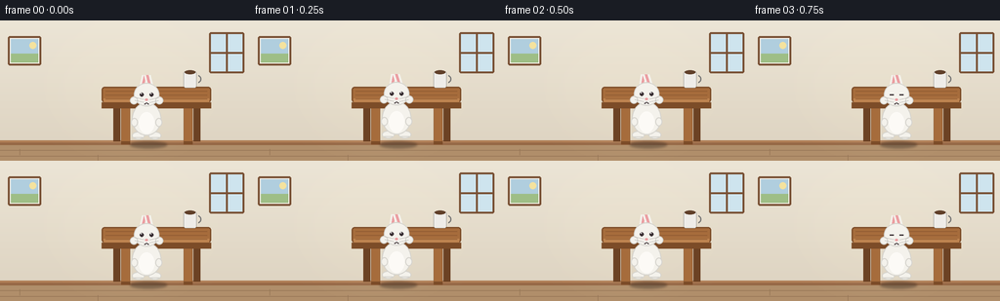
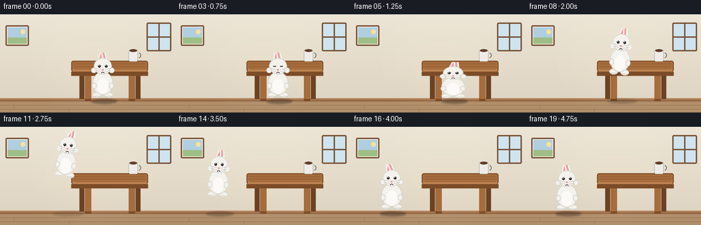

CODING AGENTS AS PIXEL WORLD MODELS
traex/Seed-2.1-Pro-0915 · dynamic_spatial_relationship_0019
点击播放 · 原生 RGB 像素
逐轮保存的候选
回放视频、检查图与代码变化。
每份候选均可单独播放。实际图片检查记录在下方工具轨迹中。
候选 01播放与检查图
点击播放 · 原生 RGB 像素


展开代码变化
--- 上一保存版本
+++ 本次保存版本
@@ -0,0 +1,296 @@
+"""Text-to-video: a rabbit in front of a table jumps to the left of the table.
+
+20 RGB frames, 256x144, 4 fps. Pure numpy/PIL rendering, 3x supersampled.
+"""
+import math
+import pathlib
+
+import numpy as np
+from PIL import Image, ImageDraw, ImageFilter
+
+import artifact_io
+
+SEED_CASE = pathlib.Path(__file__).resolve().parent
+
+W, H, N, FPS = 256, 144, 20, 4.0
+S = 3 # supersampling factor
+SW, SH = W * S, H * S
+FLOOR_Y = 128 # ground line in base coordinates
+
+# ---------------------------------------------------------------- palette
+WALL_TOP = (236, 229, 214)
+WALL_BOT = (222, 212, 194)
+BOARD = (150, 104, 70)
+BOARD_DK = (120, 80, 52)
+FLOOR = (176, 142, 106)
+FLOOR_DK = (150, 118, 86)
+WOOD = (166, 108, 60)
+WOOD_DK = (124, 76, 40)
+WOOD_LT = (190, 132, 80)
+RABBIT = (244, 242, 236)
+RABBIT_SHADE = (214, 212, 206)
+BELLY = (252, 250, 246)
+PINK = (235, 158, 162)
+DARK = (58, 48, 52)
+
+
+# ------------------------------------------------------------- primitives
+def sc(v):
+ return v * S
+
+
+def lw(v):
+ return max(1, int(round(sc(v))))
+
+
+def box(x0, y0, x1, y1):
+ return (sc(x0), sc(y0), sc(x1), sc(y1))
+
+
+def rrect(draw, b, radius, fill, outline=None, width=1):
+ draw.rounded_rectangle(box(*b), radius=sc(radius), fill=fill,
+ outline=outline, width=lw(width))
+
+
+def ellipse(draw, b, fill, outline=None, width=1):
+ draw.ellipse(box(*b), fill=fill, outline=outline,
+ width=lw(width) if outline else 1)
+
+
+def capsule(draw, ax, ay, angle_deg, length, width, fill, outline=None):
+ """Rounded line starting at (ax, ay), extending up at angle_deg."""
+ a = math.radians(angle_deg)
+ bx = ax - math.sin(a) * length
+ by = ay - math.cos(a) * length
+ w = lw(width)
+ draw.line([(sc(ax), sc(ay)), (sc(bx), sc(by))], fill=fill, width=w)
+ r = sc(width) / 2
+ for cx, cy in ((ax, ay), (bx, by)):
+ draw.ellipse((sc(cx) - r, sc(cy) - r, sc(cx) + r, sc(cy) + r), fill=fill)
+ if outline:
+ draw.line([(sc(ax), sc(ay)), (sc(bx), sc(by))], fill=outline,
+ width=lw(0.8))
+ for cx, cy in ((ax, ay), (bx, by)):
+ draw.ellipse((sc(cx) - r, sc(cy) - r, sc(cx) + r, sc(cy) + r),
+ outline=outline, width=lw(1))
+
+
+def smoothstep(u):
+ return u * u * (3 - 2 * u)
+
+
+# ------------------------------------------------------------- background
+def build_room():
+ img = Image.new("RGB", (SW, SH), WALL_TOP)
+ px = img.load()
+ for y in range(sc(FLOOR_Y)):
+ t = y / (sc(FLOOR_Y) - 1)
+ row = tuple(int(WALL_TOP[i] + (WALL_BOT[i] - WALL_TOP[i]) * t) for i in range(3))
+ for x in range(SW):
+ px[x, y] = row
+
+ d = ImageDraw.Draw(img)
+ # framed picture (left wall)
+ rrect(d, (8, 16, 42, 46), 2, fill=(248, 244, 236), outline=BOARD_DK, width=2)
+ d.rectangle(box(11, 19, 39, 43), fill=(176, 206, 222))
+ d.rectangle(box(11, 34, 39, 43), fill=(158, 190, 134)) # hill
+ d.ellipse(box(30, 22, 37, 29), fill=(244, 226, 158)) # sun
+
+ # window (right wall)
+ rrect(d, (214, 12, 250, 54), 2, fill=(206, 228, 238), outline=BOARD_DK, width=2)
+ d.line([sc(232), sc(14), sc(232), sc(52)], fill=BOARD_DK, width=lw(2))
+ d.line([sc(216), sc(33), sc(248), sc(33)], fill=BOARD_DK, width=lw(2))
+
+ # baseboard
+ d.rectangle(box(0, FLOOR_Y - 5, W, FLOOR_Y), fill=BOARD)
+ d.rectangle(box(0, FLOOR_Y - 5, W, FLOOR_Y - 3), fill=(176, 126, 86))
+
+ # floor
+ d.rectangle(box(0, FLOOR_Y, W, H), fill=FLOOR)
+ for i, y in enumerate(range(FLOOR_Y + 5, H, 6)):
+ d.line([0, sc(y), SW, sc(y)], fill=FLOOR_DK, width=lw(0.7))
+ seam_x = 20 + (i % 3) * 80
+ d.line([sc(seam_x), sc(y - 1), sc(seam_x), sc(y + 5)], fill=FLOOR_DK,
+ width=lw(0.7))
+
+ # soft warm glow behind the scene
+ glow = Image.new("L", (SW, SH), 0)
+ ImageDraw.Draw(glow).ellipse(box(60, 10, 210, 120), fill=28)
+ glow = glow.filter(ImageFilter.GaussianBlur(sc(18)))
+ warm = Image.new("RGB", (SW, SH), (255, 244, 214))
+ img = Image.composite(warm, img, glow)
+ return img
+
+
+def draw_table(base):
+ img = base.copy()
+ d = ImageDraw.Draw(img)
+
+ # back legs
+ for x0 in (116, 198):
+ d.rectangle(box(x0, 86, x0 + 7, 124), fill=(108, 66, 36))
+ # tabletop
+ rrect(d, (104, 68, 216, 84), 3, fill=WOOD, outline=WOOD_DK, width=1.5)
+ d.rectangle(box(106, 80, 214, 86), fill=WOOD_LT) # lit front lip
+ d.rectangle(box(104, 84, 216, 90), fill=WOOD_DK) # apron
+ # wood grain
+ for gy in (72.5, 76.5, 80.5):
+ d.line([sc(108), sc(gy), sc(212), sc(gy)], fill=(140, 88, 48),
+ width=lw(0.5))
+ # front legs
+ for x0 in (124, 188):
+ d.rectangle(box(x0, 90, x0 + 9, 126), fill=WOOD, outline=WOOD_DK, width=1)
+ d.rectangle(box(x0, 124, x0 + 9, 127), fill=WOOD_DK)
+
+ # mug on the right of the tabletop
+ mx = 188
+ d.rounded_rectangle(box(mx, 52, mx + 13, 69), radius=sc(2),
+ fill=(238, 236, 232), outline=(120, 120, 118), width=1)
+ d.ellipse(box(mx + 1, 51, mx + 12, 55), fill=(96, 64, 42))
+ d.arc(box(mx + 11, 56, mx + 18, 64), start=-80, end=80,
+ fill=(120, 120, 118), width=lw(1.5))
+ return img
+
+
+# --------------------------------------------------------------- rabbit
+def build_rabbit_layer(ear_sway, blink):
+ """Front-facing rabbit, feet resting on the bottom edge. Base-px coords."""
+ layer_w, layer_h = 64, 70
+ layer = Image.new("RGBA", (sc(layer_w), sc(layer_h)), (0, 0, 0, 0))
+ d = ImageDraw.Draw(layer)
+ cx = 30 # hip center x
+ fy = 66 # feet y
+ outline = RABBIT_SHADE
+
+ # ears (behind head)
+ for anchor_x, base_ang in ((cx - 5, -13), (cx + 5, 13)):
+ ang = base_ang + ear_sway
+ capsule(d, anchor_x, 17, ang, 23, 6.5, RABBIT, outline)
+ a = math.radians(ang)
+ ix = anchor_x - math.sin(a) * 3.5
+ iy = 17 - math.cos(a) * 3.5
+ capsule(d, ix, iy, ang, 15, 2.8, PINK)
+
+ # feet
+ ellipse(d, (cx - 15, fy - 8, cx - 2, fy), RABBIT, outline, 1)
+ ellipse(d, (cx + 2, fy - 8, cx + 15, fy), RABBIT, outline, 1)
+ d.line([sc(cx - 13), sc(fy - 2), sc(cx - 4), sc(fy - 2)],
+ fill=RABBIT_SHADE, width=lw(1))
+ d.line([sc(cx + 4), sc(fy - 2), sc(cx + 13), sc(fy - 2)],
+ fill=RABBIT_SHADE, width=lw(1))
+
+ # body
+ ellipse(d, (cx - 15, 28, cx + 15, fy - 4), RABBIT, outline, 1)
+ ellipse(d, (cx - 8, 38, cx + 8, fy - 6), BELLY) # belly
+ ellipse(d, (cx - 16, 44, cx - 9, 53), RABBIT, outline, 1) # paws
+ ellipse(d, (cx + 9, 44, cx + 16, 53), RABBIT, outline, 1)
+
+ # head with fluffy cheeks
+ ellipse(d, (cx - 13, 8, cx + 13, 32), RABBIT, outline, 1)
+ ellipse(d, (cx - 17, 22, cx - 9, 30), RABBIT, outline, 1)
+ ellipse(d, (cx + 9, 22, cx + 17, 30), RABBIT, outline, 1)
+
+ # face
+ if blink:
+ for ex in (cx - 5, cx + 5):
+ d.line([sc(ex - 2), sc(20), sc(ex + 2), sc(20)], fill=DARK,
+ width=lw(1.2))
+ else:
+ for ex in (cx - 5, cx + 5):
+ d.ellipse(box(ex - 2, 18, ex + 2, 22), fill=DARK)
+ d.ellipse(box(ex - 0.8, 18.6, ex + 0.2, 19.6), fill=(255, 255, 255))
+ d.ellipse(box(cx - 1.6, 24, cx + 1.6, 26.4), fill=PINK)
+ d.arc(box(cx - 4, 25, cx, 30), start=20, end=100, fill=DARK, width=lw(0.9))
+ d.arc(box(cx, 25, cx + 4, 30), start=80, end=160, fill=DARK, width=lw(0.9))
+ for side in (-1, 1):
+ for wy in (25, 28):
+ d.line([sc(cx + side * 3), sc(wy), sc(cx + side * 12), sc(wy - 2)],
+ fill=(170, 166, 162), width=lw(0.5))
+ return layer
+
+
+def pose_rabbit(scene, cx, feet_y, sx, sy, tilt, ear_sway, blink=False):
+ layer = build_rabbit_layer(ear_sway, blink)
+ layer = layer.resize((max(1, int(layer.width * sx)),
+ max(1, int(layer.height * sy))),
+ Image.Resampling.BICUBIC)
+ layer = layer.rotate(tilt, resample=Image.Resampling.BICUBIC, expand=True)
+ x = int(sc(cx) - layer.width / 2)
+ y = int(sc(feet_y) - layer.height)
+ scene.alpha_composite(layer, (x, y))
+
+
+def draw_shadow(scene, cx, lift, width=38):
+ w = width * (1 + lift / 220)
+ alpha = int(95 * max(0.0, 1 - lift / 70))
+ sh = Image.new("RGBA", (SW, SH), (0, 0, 0, 0))
+ ImageDraw.Draw(sh).ellipse(
+ box(cx - w / 2, FLOOR_Y - 4, cx + w / 2, FLOOR_Y + 3),
+ fill=(40, 30, 24, alpha))
+ scene.alpha_composite(sh.filter(ImageFilter.GaussianBlur(sc(1.2))))
+
+
+def draw_dust(scene, cx, strength, side):
+ if strength <= 0:
+ return
+ overlay = Image.new("RGBA", (SW, SH), (0, 0, 0, 0))
+ d = ImageDraw.Draw(overlay)
+ rng = np.random.default_rng(7)
+ for i in range(7):
+ t = i / 6
+ dx = side * (4 + 12 * t) + rng.uniform(-2, 2)
+ dy = -2 - 5 * t + rng.uniform(-1.5, 1.5)
+ r = 1.6 + 2.6 * t
+ a = int(150 * strength * (1 - t * 0.7))
+ d.ellipse(box(cx + dx - r, FLOOR_Y + dy - r, cx + dx + r, FLOOR_Y + dy + r),
+ fill=(214, 198, 174, a))
+ scene.alpha_composite(overlay.filter(ImageFilter.GaussianBlur(sc(0.6))))
+
+
+# ------------------------------------------------------------- timeline
+X0, X1 = 152, 62 # in front of table -> left of table
+JUMP_H = 44 # apex lift in base px
+
+
+def frame_state(f):
+ """cx, lift, sx, sy, tilt(deg), ear_sway, blink, dust=(side, strength)."""
+ blink = f == 3
+ if f <= 4: # idle in front
+ bob = max(0, math.sin(f / 5 * 2 * math.pi))
+ return X0, bob, 1.0, 1.0, 0, math.sin(f * 0.9) * 4, blink, (0, 0)
+ if f == 5: # crouch
+ return X0, 0, 1.14, 0.8, 0, -10, False, (0, 0)
+ if f == 6: # takeoff
+ return X0, 0, 0.9, 1.18, 4, -16, False, (1, 0.9)
+ if 7 <= f <= 14: # flight
+ u = (f - 6) / 9
+ cx = X0 + (X1 - X0) * smoothstep(u)
+ lift = JUMP_H * 4 * u * (1 - u)
+ tilt = -7 * math.sin(math.pi * u)
+ sway = -18 + 20 * abs(u - 0.5)
+ return cx, lift, 0.96, 1.04, tilt, sway, False, (0, 0)
+ if f == 15: # landing squash
+ return X1, 0, 1.16, 0.78, 0, 14, False, (-1, 0.9)
+ k = f - 15 # settle + idle
+ bob = max(0, math.sin(k * 1.1) * 0.8)
+ return X1, bob, 1.0, 1.0, 0, 8 + math.sin(f * 0.9) * 4, f == 18, (0, 0)
+
+
+def main():
+ table = draw_table(build_room()).convert("RGBA")
+ frames = []
+ for f in range(N):
+ scene = table.copy()
+ cx, lift, sx, sy, tilt, sway, blink, dust = frame_state(f)
+ draw_shadow(scene, cx, lift)
+ draw_dust(scene, cx, dust[1], dust[0])
+ pose_rabbit(scene, cx, FLOOR_Y - 2 - lift, sx, sy, tilt, sway, blink)
+ frame = scene.convert("RGB").resize((W, H), Image.Resampling.LANCZOS)
+ frames.append(np.asarray(frame, dtype=np.uint8))
+ frames = np.stack(frames)
+ artifact_io.save(frames, SEED_CASE)
+ print(f"saved {frames.shape} to {SEED_CASE}")
+
+
+if __name__ == "__main__":
+ main()
可观测工具轨迹
实际执行的命令与返回图片。
命令 1exit 0
/bin/bash -lc 'cat prompt.txt GENERATION_RULES.md task_spec.json 2>/dev/null | head -200; ls -la'
命令 2exit 0
/bin/bash -lc 'cat artifact_io.py'
命令 3exit 1
/bin/bash -lc 'cd . && python generate.py && ls -la pixels.npz frames | head'
命令 4exit 0
/bin/bash -lc "cd . && grep -n \"width=sc\\|width=max\" generate.py"
命令 5exit 0
/bin/bash -lc "cd . && sed -i 's/width=sc(\\([0-9.]*\\))/width=lw(\\1)/g; s/width=max(1, sc(0.5))/width=lw(0.5)/g; s/width=max(1, int(round(sc(0.7))))/width=lw(0.7)/g' generate.py && grep -n \"width=\" generate.py | grep -v \"lw(\" "
命令 6exit 1
/bin/bash -lc 'cd . && python generate.py && ls -la pixels.npz frames | head -30'
命令 7exit 0
/bin/bash -lc 'cd . && python generate.py && ls -la pixels.npz index.html inspection.png transition_check.png && ls frames | head'
视觉工具实际返回图片 1

保存候选 1 份；完成命令 7 次；可验证图片返回 1 张。原始 API 响应与完整日志保留在本地。